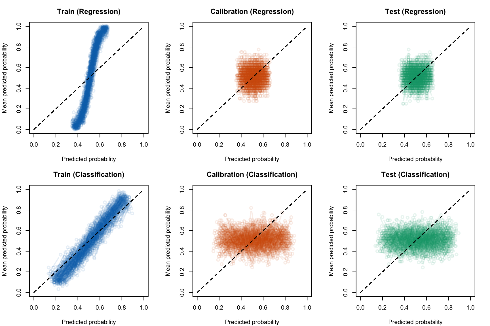
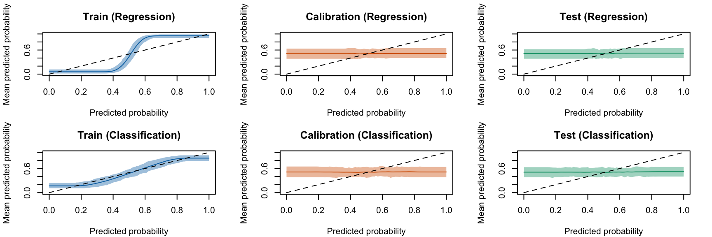

In this chapter, we measure the calibration metrics defined in Chapter 1 on a Random Forest classifier trained on simulated data. Subsequently, we explore the different recalibration methods presented in Chapter 2 to recalibrate the predicted scores obtained from the Random Forest. Thus, we no longer work with the transformed probabilities \(p_u\) but directly with the predicted scores obtained from the Random Forest \(\hat{s}(\boldsymbol x_i)\). To avoid overfitting, the data will be split into training (used to train the random forest), calibration (to recalibrate the scores) and test sets (to assess the performances on unseen data).
Display the definitions of colors.
library(tidyverse)
── Attaching core tidyverse packages ──────────────────────── tidyverse 2.0.0 ──
✔ dplyr 1.1.4 ✔ readr 2.1.5
✔ forcats 1.0.0 ✔ stringr 1.5.1
✔ ggplot2 3.5.1 ✔ tibble 3.2.1
✔ lubridate 1.9.3 ✔ tidyr 1.3.1
✔ purrr 1.0.2
── Conflicts ────────────────────────────────────────── tidyverse_conflicts() ──
✖ dplyr::filter() masks stats::filter()
✖ dplyr::lag() masks stats::lag()
ℹ Use the conflicted package (<http://conflicted.r-lib.org/>) to force all conflicts to become errors
We use the same DGP as that presented in Section 1.1 in Chapter 1. However, here, we only need the observed events \(d\) and the different features \(x_1\), \(x_2\), \(x_3\) and \(x_4\). Let us redefine here the function which simulates a single dataset:
#' Simulates data#'#' @param n_obs number of desired observations#' @param seed seed to use to generate the datasim_data <-function(n_obs =2000, seed) {set.seed(seed) x1 <-runif(n_obs) x2 <-runif(n_obs) x3 <-runif(n_obs) x4 <-runif(n_obs) epsilon_p <-rnorm(n_obs, mean =0, sd = .5)# True latent score eta <--0.1*x1 +0.05*x2 +0.2*x3 -0.05*x4 + epsilon_p# True probability p <- (1/ (1+exp(-eta)))# Observed event d <-rbinom(n_obs, size =1, prob = p)tibble(# Event Probabilityp = p,# Binary outcome variabled = d,# Variablesx1 = x1,x2 = x2,x3 = x3,x4 = x4 )}
4.2 Splitting the dataset
The process applied in this chapter is divided into two parts: 1. training the Random Forest classifier to obtain the predicted scores \(\hat{s}(\boldsymbol x_i)\) 2. calculating the different calibration metrics presented in Chapter 1
We split the dataset into three parts: 1. a train set: to train the Random Forest classifier, 2. a calibration set: to train the recalibrator, 3. a test set: on which we will compute the calibration metrics.
To split the data, we modify the function get_samples() from Chapter 1 to obtain three different sets instead of two:
#' Get calibration/test samples from the DGP#'#' @param seed seed to use to generate the data#' @param n_obs number of desired observationsget_samples <-function(seed,n_obs =2000) {set.seed(seed) data_all <-sim_data(n_obs = n_obs, seed = seed )# Train/calibration/test sets---- data <- data_all |>select(d, x1:x4) true_probas <- data_all |>select(p) train_index <-sample(1:nrow(data), size = .6*nrow(data), replace =FALSE) tb_train <- data |>slice(train_index) tb_calib_test <- data |>slice(-train_index) true_probas_train <- true_probas |>slice(train_index) true_probas_calib_test <- true_probas |>slice(-train_index) calib_index <-sample(1:nrow(tb_calib_test), size = .5*nrow(tb_calib_test), replace =FALSE ) tb_calib <- tb_calib_test |>slice(calib_index) tb_test <- tb_calib_test |>slice(-calib_index) true_probas_calib <- true_probas_calib_test |>slice(calib_index) true_probas_test <- true_probas_calib_test |>slice(-calib_index)list(data_all = data_all,data = data,tb_train = tb_train,tb_calib = tb_calib,tb_test = tb_test,true_probas_train = true_probas_train,true_probas_calib = true_probas_calib,true_probas_test = true_probas_test,train_index = train_index,calib_index = calib_index,seed = seed,n_obs = n_obs )}
We will consider 200 replications for the simulations. In each simulation, we will draw 2,000 observation from the data generation process.
n_repl <-200n_obs <-2000
4.3 Simulations: Regression Task
Let us define a function to train the Random Forest and predict it on a new dataset in order to estimate our binary outcome variable \(D\) (and so, \(P(D=1)\)) using the different features \(X_1\), \(X_2\), \(X_3\) and \(X_4\).
Note
Using a Random Forest regressor for classification task provides actual probability scores whereas a Random Forest classifier yields, for one observation, the average predicted classes across the ensemble of trees (see Section 3.3).
library(randomForest)#' Apply Random Forest algorithm#' #' @param train_data train dataset#' @param calib_data calibration dataset#' @param test_data test datasetapply_rf <-function(train_data, calib_data, test_data) { rf <-randomForest( d ~ ., data = train_data, nodesize =0.1*nrow(train_data),ntree =500 ) scores_train <-predict(rf, newdata = train_data, type ="response") scores_calib <-predict(rf, newdata = calib_data, type ="response") scores_test <-predict(rf, newdata = test_data, type ="response")list(scores_train = scores_train,scores_calib = scores_calib,scores_test = scores_test )}
We define function simul_rf() which will generate some data from the PGD, train the forest, and return predictions made on the train set, the calibration set, and the test set.
Figure 4.2: Scores predicted by the Random Forest regressor according to the true probabilities for one replication. The horizontal grey bars define the quantiles at 5% of predicted probabilities. The vertical grey bars define the quantiles at 5% of true probabilities.
Now, we can look at these distributions on all replications by first defining a function that aggregates simulated results for train, calibration and test sets:
#' Computes calibration metrics on a simulation, with uncalibrated scores#' #' @param simul results of a simulation obtained with simul_rfcalib_dist_rf <-function(simul) { n_obs <- simul$n_obs seed <- simul$seed# Get the data used to train the forest data <-get_samples(n_obs = n_obs, seed = seed) true_probas_train <- data$true_probas_train |>pull(p) true_probas_calib <- data$true_probas_calib |>pull(p) true_probas_test <- data$true_probas_test |>pull(p)# Scores estimated by the RF scores_train <- simul$scores$scores_train scores_calib <- simul$scores$scores_calib scores_test <- simul$scores$scores_test res_train <-tibble(true_probas = true_probas_train,scores = scores_train,sample ="train" ) res_calib <-tibble(true_probas = true_probas_calib,scores = scores_calib,sample ="calibration" ) res_test <-tibble(true_probas = true_probas_test,scores = scores_test,sample ="test" ) res_train |>bind_rows(res_calib) |>bind_rows(res_test) |>mutate(seed = seed,n_obs = n_obs )}
Let us apply the calib_dist_rf() function to all the simulations within the regression framework:
Let us visualize how the probability distributions vary given the dataset, within true probabilities and probabilities predicted by a Random Forest regressor:
Display the R codes used to create the Figure.
values <-c("true_probas", "scores")values_lab <-c("True probabilities", "Predicted scores")colours_samples <-c("Train"="#0072B2", "Calibration"="#D55E00", "Test"="#009E73")par(mfrow =c(2,1))for (i in1:length(values)) { value <- values[i] title <- values_lab[i] form <-str_c(value, "~sample") |>as.formula()par(mar =c(3.5, 4.1, 3.1, 2.1))boxplot( form, data = dist_rf_simuls,xlab ="", ylab ="",main = title,col = colours_samples )}
Figure 4.3: Distribution of true probabilities and scores predicted by the Random Forest regressor using all replications
We can display the distribution of true probabilities regarding the predicted scores, for the 200 replications:
Figure 4.4: Scores predicted by the Random Forest regressor according to the true probabilities for all replications. The horizontal grey bars define the quantiles at 5% of predicted probabilities. The vertical grey bars define the quantiles at 5% of true probabilities.
4.4 Simulations: Classification Task
We now run some simulations to obtain \(\hat{p}_{\text{vote}}\).
We modify the apply_rf() function (regression) to match with the regression task.
#' Apply Random Forest algorithm as a classifier#' #' @param train_data train dataset#' @param calib_data calibration dataset#' @param test_data test datasetapply_rf_vote <-function(train_data, calib_data, test_data) { rf <-randomForest( d ~ ., data = train_data |>mutate(d =factor(d)), nodesize =0.1*nrow(train_data),ntree =500 ) scores_train <-predict(rf, newdata = train_data, type ="vote")[, "1"] scores_calib <-predict(rf, newdata = calib_data, type ="vote")[, "1"] scores_test <-predict(rf, newdata = test_data, type ="vote")[, "1"]list(scores_train = scores_train,scores_calib = scores_calib,scores_test = scores_test )}
We also redefine the simul_rf function which will generate some data from the PGD, train the forest (as a classifier), and return predictions made on the train set, the calibration set, and the test set.
Figure 4.6: Scores predicted by the Random Forest classifier according to the true probabilities for one replication. The horizontal grey bars define the quantiles at 5% of predicted probabilities. The vertical grey bars define the quantiles at 5% of true probabilities.
Now, we can look at these distributions on all replications by applying the function calib_dist_rf(), defined in the section Section 4.3:
Let us visualize how the probability distributions vary given the dataset, within true probabilities and probabilities predicted by a Random Forest classifier:
Display the R codes used to create the Figure.
values <-c("true_probas", "scores")values_lab <-c("True probabilities", "Predicted scores")colours_samples <-c("Train"="#0072B2", "Calibration"="#D55E00", "Test"="#009E73")par(mfrow =c(2,1))for (i in1:length(values)) { value <- values[i] title <- values_lab[i] form <-str_c(value, "~sample") |>as.formula()par(mar =c(3.5, 4.1, 3.1, 2.1))boxplot( form, data = dist_rf_simuls_vote,xlab ="", ylab ="",main = title,col = colours_samples )}
Figure 4.7: Distribution of true probabilities and scores predicted by the Random Forest classifier for all replications
We can display the distribution of true probabilities regarding the predicted scores, for the 200 replications:
Figure 4.8: Scores predicted by the Random Forest classifier according to the true probabilities for all replications. The horizontal grey bars define the quantiles at 5% of predicted probabilities. The vertical grey bars define the quantiles at 5% of true probabilities.
4.5 Standard Metrics
Let us have a look at the goodness of fit of the random forests obtained in both cases (regression or classification). To do so, we compute the standard performance metrics defined in Chapter 1.
4.5.1 Helper Functions
We (re)define a helper function to compute standard metrics (see Section 1.4 in Chapter 1):
#' Computes goodness of fit metrics#' #' @param true_prob true probabilities#' @param obs observed values (binary outcome)#' @param pred predicted scores#' @param threshold classification threshold (default to `.5`)compute_gof <-function(true_prob, obs, pred, threshold = .5) {# MSE mse <-mean((true_prob - pred)^2) pred_class <-as.numeric(pred > threshold) confusion_tb <-tibble(obs = obs,pred = pred_class ) |>count(obs, pred) TN <- confusion_tb |>filter(obs ==0, pred ==0) |>pull(n) TP <- confusion_tb |>filter(obs ==1, pred ==1) |>pull(n) FP <- confusion_tb |>filter(obs ==0, pred ==1) |>pull(n) FN <- confusion_tb |>filter(obs ==1, pred ==0) |>pull(n)if (length(TN) ==0) TN <-0if (length(TP) ==0) TP <-0if (length(FP) ==0) FP <-0if (length(FN) ==0) FN <-0 n_pos <-sum(obs ==1) n_neg <-sum(obs ==0)# Accuracy acc <- (TP + TN) / (n_pos + n_neg)# Missclassification rate missclass_rate <-1- acc# Sensitivity (True positive rate)# proportion of actual positives that are correctly identified as such TPR <- TP / n_pos# Specificity (True negative rate)# proportion of actual negatives that are correctly identified as such TNR <- TN / n_neg# False positive Rate FPR <- FP / n_negtibble(mse = mse,accuracy = acc,missclass_rate = missclass_rate,sensitivity = TPR,specificity = TNR,threshold = threshold,FPR = FPR )}
We (re)define the function compute_gof_simul() to apply compute_gof(), defined above, to compute the different standard performance metrics on predicted scores of one replication (see Section 1.4 in Chapter 1):
#' Computes goodness of fit metrics for a replication#'#' @param n_obs desired number of observation#' @param seed random seed to use#' @type type of Random Forest to use (either `regression` or `classification`) compute_gof_simul <-function(n_obs, seed,type =c("regression", "classification")) { current_seed <- seed# Generate Data current_data <-get_samples(n_obs = n_obs, seed = current_seed )# Get the calib/test datasets with true probabilities data_all_train <- current_data$tb_train data_all_calib <- current_data$tb_calib data_all_test <- current_data$tb_test# Test set true_prob_test <- current_data$true_probas_test$p obs_test <- data_all_test$d## Fit the RFif (type =="regression"){ scores <-apply_rf(train_data = data_all_train,calib_data = data_all_calib,test_data = data_all_test ) } elseif (type =="classification"){ scores <-apply_rf_vote(train_data = data_all_train,calib_data = data_all_calib,test_data = data_all_test ) } else {stop("Random Forest type should be either regression or classification.") } pred_test <- scores$scores_test metrics_simul_test <-map(.x =seq(0, 1, by = .01), # we vary the probability threshold.f =~compute_gof(true_prob = true_prob_test,obs = obs_test,pred = pred_test,threshold = .x ) ) |>list_rbind() metrics_simul_test <- metrics_simul_test |>mutate(seed = current_seed ) metrics_simul_test}
Let us visualize how the performance metrics vary from one replication to another, on the test set. The boxplots are shown in Figure 4.9 (regression) and in Figure 4.10 (classification).
#' Boxplots for the simulations to visualize the distribution of some #' traditional metrics as a function of the probability threshold.#' And, ROC curves#' The resulting figure is a panel of graphs, with vayring values for the #' transformation applied to the probabilities (in columns) and different #' metrics (in rows).#' #' @param tb_metrics tibble with computed metrics for the simulations#' @param metrics names of the metrics computedboxplot_simuls_metrics <-function(tb_metrics, metrics) {par(mfrow =c(2, length(metrics)%/%2+1))for (i_metric in1:length(metrics)) { metric <- metrics[i_metric] tb_metrics_current <- tb_metricsif (metric =="roc") { seeds <-unique(tb_metrics_current$seed)par(mar =c(4.1, 4.1, 2.1, 2.1))plot(0:1, 0:1,type ="l", col =NULL,xlim =0:1, ylim =0:1,xlab ="False Positive Rate",ylab ="True Positive Rate",main ="" )for (i_seed in1:length(seeds)) { tb_metrics_current_seed <- tb_metrics_current |>filter(seed == seeds[i_seed])lines(x = tb_metrics_current_seed$FPR,y = tb_metrics_current_seed$sensitivity,lwd =2, col =adjustcolor("black", alpha.f = .04) ) }segments(0, 0, 1, 1, col ="black", lty =2) } else {# not ROC tb_metrics_current <- tb_metrics_current |>filter(threshold %in%seq(0, 1, by = .1)) form <-str_c(metric, "~threshold")par(mar =c(4.1, 4.1, 2.1, 2.1))boxplot(formula(form), data = tb_metrics_current,xlab ="Threshold", ylab = metric ) } }}
4.5.3.1 Regression
We aim to create a set of boxplots to visually assess the Random Forest in the case of regression.
Figure 4.10: Standard metrics on Random Forest predicted scores (classification).
4.6 Calibration Metrics
Let us have a look at the calibration of the random forests obtained in both cases (regression or classification). To do so, we compute the calibration metrics defined in Chapter 1.
#' Computes summary statistics for binomial observed data and predicted scores#' returned by a model#'#' @param obs vector of observed events#' @param scores vector of predicted probabilities#' @param k number of classes to create (quantiles, default to `10`)#' @param threshold classification threshold (default to `.5`)#' @return a tibble where each row correspond to a bin, and each columns are:#' - `score_class`: level of the decile that the bin represents#' - `nb`: number of observation#' - `mean_obs`: average of obs (proportion of positive events)#' - `mean_score`: average predicted score (confidence)#' - `sum_obs`: number of positive events (number of positive events)#' - `accuracy`: accuracy (share of correctly predicted, using the#' threshold)get_summary_bins <-function(obs, scores,k =10, threshold = .5) { breaks <-quantile(scores, probs = (0:k) / k) tb_breaks <-tibble(breaks = breaks, labels =0:k) |>group_by(breaks) |>slice_tail(n =1) |>ungroup() x_with_class <-tibble(obs = obs,score = scores, ) |>mutate(score_class =cut( score,breaks = tb_breaks$breaks,labels = tb_breaks$labels[-1],include.lowest =TRUE ),pred_class =ifelse(score > threshold, 1, 0),correct_pred = obs == pred_class ) x_with_class |>group_by(score_class) |>summarise(nb =n(),mean_obs =mean(obs),mean_score =mean(score), # confidencesum_obs =sum(obs),accuracy =mean(correct_pred) ) |>ungroup() |>mutate(score_class =as.character(score_class) |>as.numeric() ) |>arrange(score_class)}#' Expected Calibration Error#'#' @param obs vector of observed events#' @param scores vector of predicted probabilities#' @param k number of classes to create (quantiles, default to `10`)#' @param threshold classification threshold (default to `.5`)e_calib_error <-function(obs, scores, k =10, threshold = .5) { summary_bins <-get_summary_bins(obs = obs, scores = scores, k = k, threshold = .5 ) summary_bins |>mutate(ece_bin = nb *abs(accuracy - mean_score)) |>summarise(ece =1/sum(nb) *sum(ece_bin)) |>pull(ece)}
#' Quantile-Based MSE#'#' @param obs vector of observed events#' @param scores vector of predicted probabilities#' @param k number of classes to create (quantiles, default to `10`)#' @param threshold classification threshold (default to `.5`)qmse_error <-function(obs, scores, k =10, threshold = .5) { summary_bins <-get_summary_bins(obs = obs, scores = scores, k = k, threshold = .5 ) summary_bins |>mutate(qmse_bin = nb * (mean_obs - mean_score)^2) |>summarise(qmse =1/sum(nb) *sum(qmse_bin)) |>pull(qmse)}
library(binom)#' @param obs vector of observed events#' @param scores vector of predicted probabilities#' @param tau value at which to compute the confidence interval#' @param nn fraction of nearest neighbors#' @prob level of the confidence interval (default to `.95`)#' @param method Which method to use to construct the interval. Any combination#' of c("exact", "ac", "asymptotic", "wilson", "prop.test", "bayes", "logit",#' "cloglog", "probit") is allowed. Default is "all".#' @return a tibble with a single row that corresponds to estimations made in#' the neighborhood of a probability $p=\tau$`, using the fraction `nn` of#' neighbors, where the columns are:#' - `score`: score tau in the neighborhood of which statistics are computed#' - `mean`: estimation of $E(d | s(x) = \tau)$#' - `lower`: lower bound of the confidence interval#' - `upper`: upper bound of the confidence intervallocal_ci_scores <-function(obs, scores, tau, nn,prob = .95,method ="probit") {# Identify the k nearest neighbors based on hat{p} k <-round(length(scores) * nn) rgs <-rank(abs(scores - tau), ties.method ="first") idx <-which(rgs <= k)binom.confint(x =sum(obs[idx]),n =length(idx),conf.level = prob,methods = method )[, c("mean", "lower", "upper")] |>tibble() |>mutate(xlim = tau) |>relocate(xlim, .before = mean)}#' Compute the Weighted Mean Squared Error to assess the calibration of a model#'#' @param local_scores tibble with expected scores obtained with the #' `local_ci_scores()` function#' @param scores vector of raw predicted probabilitiesweighted_mse <-function(local_scores, scores) {# To account for border bias (support is [0,1]) scores_reflected <-c(-scores, scores, 2- scores)if (all(is.na(scores))) { wmse <-NA } else { dens <-density(x = scores_reflected, from =0, to =1, n =length(local_scores$xlim) )# The weights weights <- dens$y wmse <- local_scores |>mutate(wmse_p = (xlim - mean)^2,weight =!!weights ) |>summarise(wmse =sum(weight * wmse_p) /sum(weight)) |>pull(wmse) }}
4.6.2 Calculating the Metrics
Next, we define the function calib_metrics_rf_uncalib() which computes the true MSE and the calibration metrics from Chapter 1, from a single replication of the simulations.
#' Computes calibration metrics on a simulation, with uncalibrated scores#' #' @param simul results of a simulation obtained with simul_rf#' @param linspace values at which to compute the mean observed event when computing the WMSEcalib_metrics_rf_uncalib <-function(simul, linspace =NULL) {if (is.null(linspace)) linspace <-seq(0, 1, length.out =101) n_obs <- simul$n_obs seed <- simul$seed# Get the data used to train the forest data <-get_samples(n_obs = n_obs, seed = seed) tb_train <- data$tb_train tb_calib <- data$tb_calib tb_test <- data$tb_test true_probas_train <- data$true_probas_train |>pull(p) true_probas_calib <- data$true_probas_calib |>pull(p) true_probas_test <- data$true_probas_test |>pull(p)# Scores estimated by the RF scores_train <- simul$scores$scores_train scores_calib <- simul$scores$scores_calib scores_test <- simul$scores$scores_test# Mean observed events---- expected_events_train <-map(.x = linspace,.f =~local_ci_scores(obs = tb_train$d,scores = scores_train, tau = .x, nn = .15, prob = .5, method ="probit")) |>bind_rows() expected_events_calib <-map(.x = linspace,.f =~local_ci_scores(obs = tb_calib$d,scores = scores_calib, tau = .x, nn = .15, prob = .5, method ="probit")) |>bind_rows() expected_events_test <-map(.x = linspace,.f =~local_ci_scores(obs = tb_test$d,scores = scores_test, tau = .x, nn = .15, prob = .5, method ="probit")) |>bind_rows()# Compute Metrics----## True MSE mse_train <-mean((true_probas_train - scores_train)^2) mse_calib <-mean((true_probas_calib - scores_calib)^2) mse_test <-mean((true_probas_test - scores_test)^2)## Brier Score brier_train <-brier_score(obs = tb_train$d, score = scores_train) brier_calib <-brier_score(obs = tb_calib$d, score = scores_calib) brier_test <-brier_score(obs = tb_test$d, score = scores_test)## Expected Calibration Error ece_train <-e_calib_error(obs = tb_train$d, scores = scores_train, k =10, threshold = .5 ) ece_calib <-e_calib_error(obs = tb_calib$d, scores = scores_calib, k =5, threshold = .5 ) ece_test <-e_calib_error(obs = tb_test$d, scores = scores_test, k =5, threshold = .5 )# Quantile Mean Squared Error qmse_train <-qmse_error(obs = tb_train$d, score = scores_train, k =10, threshold = .5 ) qmse_calib <-qmse_error(obs = tb_calib$d, score = scores_calib, k =5, threshold = .5 ) qmse_test <-qmse_error(obs = tb_test$d, score = scores_test, k =5, threshold = .5 )# Weighted Mean Squared Error wmse_train <-weighted_mse(local_scores = expected_events_train, scores = scores_train ) wmse_calib <-weighted_mse(local_scores = expected_events_calib, scores = scores_calib ) wmse_test <-weighted_mse(local_scores = expected_events_test, scores = scores_test ) res_train <-tibble(mse = mse_train,brier = brier_train,ece = ece_train,qmse = qmse_train,wmse = wmse_train,sample ="train" ) res_calib <-tibble(mse = mse_calib,brier = brier_calib,ece = ece_calib,qmse = qmse_calib,wmse = wmse_calib,sample ="calibration" ) res_test <-tibble(mse = mse_test,brier = brier_test,ece = ece_test,qmse = qmse_test,wmse = wmse_test,sample ="test" ) res_train |>bind_rows(res_calib) |>bind_rows(res_test) |>mutate(seed = seed,n_obs = n_obs )}
Let us apply the calib_metrics_rf_uncalib() function to all the simulations.
Let us visualize how the metrics vary from one replication to another, on the train set, on the calibration set, and on the test set. Note that since we did not recalibrate the scores \(s(\boldsymbol x)\), the calibration and the test set should exhibit similar values for the different metrics: they both are unseen data from the same DGP. The boxplots are shown in Figure 4.11 (regression) and in Figure 4.13 (classification).
4.6.3.1 Regression
First, let us turn the sample column of the results as a factor.
Figure 4.13: Goodness of fit and calibration metrics of the Random Forest (not recalibrated), estimated in a regression context or in a classification context.
4.7 Calibration Visualizations
Let us now turn to visualization techniques to observe the calibration of random forest, as in Section 1.6 in Chapter 1.
4.7.1 Helper Functions
4.7.1.1 Quantile-Based Bins
We rely here on the get_summary_bins() function defined in the helper functions (Section 4.6.1) for the ECE.
Let us define a function, calib_curve_quant_simul_rf(), to get the calibration curve for a single simulation of the random forest.
#' Get the calibration curve for one simulation for the random forest,#' using the quantile-based approach#' #' @param simul results of a simulation obtained with simul_rf#' @param linspace values at which to compute the mean observed event when #' computing the WMSEcalib_curve_quant_simul_rf <-function(simul,linspace =NULL) {if (is.null(linspace)) linspace <-seq(0, 1, length.out =101) n_obs <- simul$n_obs seed <- simul$seed# Get the data used to train the forest data <-get_samples(n_obs = n_obs, seed = seed) tb_train <- data$tb_train tb_calib <- data$tb_calib tb_test <- data$tb_test# Scores estimated by the RF scores_train <- simul$scores$scores_train scores_calib <- simul$scores$scores_calib scores_test <- simul$scores$scores_test summary_bins_train <-get_summary_bins(obs = tb_train$d,scores = scores_train, k =10, threshold = .5) summary_bins_calib <-get_summary_bins(obs = tb_calib$d,scores = scores_calib, k =10, threshold = .5) summary_bins_test <-get_summary_bins(obs = tb_test$d,scores = scores_test, k =10, threshold = .5) summary_bins_train |>mutate(sample ="train") |>bind_rows( summary_bins_calib |>mutate(sample ="calibration") ) |>bind_rows( summary_bins_test |>mutate(sample ="test") ) |>select(score_class, mean_score, mean_obs, sample) |>mutate(n_obs = n_obs,seed = seed )}
4.7.1.2 Calibration Curve with Local Regression
To visualize the calibration of the Random Forest using a smoother version of the calibration curve, we rely on a local regression instead of quantiles that define bins in which we can compute the average value of the event.
We define the function calib_curve_locfit_simul_rf() to get the calibration curve for a single replication of the simulations for the random forest.
#' Get the calibration curve for one simulation for the random forest,#' using the local regression approach#' #' @param simul results of a simulation obtained with simul_rf#' @param linspace values at which to compute the mean observed event when #' computing the WMSEcalib_curve_locfit_simul_rf <-function(simul,linspace =NULL) {if (is.null(linspace)) linspace <-seq(0, 1, length.out =101) n_obs <- simul$n_obs seed <- simul$seed# Get the data used to train the forest data <-get_samples(n_obs = n_obs, seed = seed) tb_train <- data$tb_train tb_calib <- data$tb_calib tb_test <- data$tb_test# Scores estimated by the RF scores_train <- simul$scores$scores_train scores_calib <- simul$scores$scores_calib scores_test <- simul$scores$scores_test locfit_0_train <-locfit(formula = d ~lp(score, nn =0.15, deg =0), kern ="rect", maxk =200, data =tibble(d = tb_train$d, score = scores_train) ) locfit_0_calib <-locfit(formula = d ~lp(score, nn =0.15, deg =0), kern ="rect", maxk =200, data =tibble(d = tb_calib$d, score = scores_calib) ) locfit_0_test <-locfit(formula = d ~lp(score, nn =0.15, deg =0), kern ="rect", maxk =200, data =tibble(d = tb_test$d, score = scores_test) ) score_c_locfit_0_train <-predict(locfit_0_train, newdata = linspace) score_c_locfit_0_calib <-predict(locfit_0_calib, newdata = linspace) score_c_locfit_0_test <-predict(locfit_0_test, newdata = linspace)# Make sure to have values in [0,1] score_c_locfit_0_train[score_c_locfit_0_train >1] <-1 score_c_locfit_0_train[score_c_locfit_0_train <0] <-0 score_c_locfit_0_calib[score_c_locfit_0_calib >1] <-1 score_c_locfit_0_calib[score_c_locfit_0_calib <0] <-0 score_c_locfit_0_test[score_c_locfit_0_test >1] <-1 score_c_locfit_0_test[score_c_locfit_0_test <0] <-0 res_train <-tibble(xlim = linspace,locfit_pred = score_c_locfit_0_train,sample ="train" ) res_calib <-tibble(xlim = linspace,locfit_pred = score_c_locfit_0_calib,sample ="calibration" ) res_test <-tibble(xlim = linspace,locfit_pred = score_c_locfit_0_test,sample ="test" ) res_train |>bind_rows( res_calib ) |>bind_rows( res_test ) |>mutate(n_obs = n_obs,seed = seed )}
4.7.1.3 Calibration Curve with Moving Average and Confidence Intervals
We define the function calib_curve_ma_simul_rf() to get the calibration curve for a single replication of the simulations for the random forest, using another smooth version of the calibration curve, obtained with a moving average.
#' Get the calibration curve for one simulation for the random forest,#' using moving averages#' #' @param simul results of a simulation obtained with simul_rf#' @param linspace values at which to compute the mean observed event when #' computing the WMSEcalib_curve_ma_simul_rf <-function(simul,linspace =NULL) {if (is.null(linspace)) linspace <-seq(0, 1, length.out =101) n_obs <- simul$n_obs seed <- simul$seed# Get the data used to train the forest data <-get_samples(n_obs = n_obs, seed = seed) tb_train <- data$tb_train tb_calib <- data$tb_calib tb_test <- data$tb_test# Scores estimated by the RF scores_train <- simul$scores$scores_train scores_calib <- simul$scores$scores_calib scores_test <- simul$scores$scores_test calib_ma_train <-map(.x = linspace,.f =~local_ci_scores(obs = tb_train$d,scores = scores_train,tau = .x, nn = .15, prob = .5, method ="probit") ) |>bind_rows() |>mutate(sample ="train") calib_ma_calib <-map(.x = linspace,.f =~local_ci_scores(obs = tb_calib$d,scores = scores_calib,tau = .x, nn = .15, prob = .5, method ="probit") ) |>bind_rows() |>mutate(sample ="calibration") calib_ma_test <-map(.x = linspace,.f =~local_ci_scores(obs = tb_test$d,scores = scores_test,tau = .x, nn = .15, prob = .5, method ="probit") ) |>bind_rows() |>mutate(sample ="test") calib_ma_train |>bind_rows( calib_ma_calib ) |>bind_rows( calib_ma_test ) |>mutate(n_obs = n_obs,seed = seed )}
4.7.2 Quantile-based Bins
Let us get the different curves for all the simulations.
Now, we can plot the calibration curve on each sample (train, calibration, test). Each line corresponds to the calibration curve of a single replicaiton of the simulations. The curves are shown in Figure 4.14 (regression), in Figure 4.15 (classification), and in Figure 4.16 (comparison of the two).
Figure 4.16: Calibration curve for the 200 replications of the estimation of the Random Forest estimated in a regression context or a calibration context, obtained with quantile-based bins.

4.7.3 Local Regression
Let us get the different curves for all the simulations.
Lastly, we can plot the calibration curve obtained with local regressions on each sample (train, calibration, test). Contrary to the calibration curve obtained with the quantile-defined bins, we do not need to plot all the curves: the mean predicted probability is predicted at different values over the segment [0,1], and not only computed in bins for which the cutoff are a function of the data.
Figure 4.19: Calibration curve for the 200 replications of the estimation of the Random Forest estimated in a regression context or a calibration context, obtained with local regressions.

4.7.4 Moving Average
Let us get the different curves for all the simulations.
Figure 4.22: Calibration curve for the 200 replications of the estimation of the Random Forest estimated in a regression context or a calibration context, obtained with moving averages.